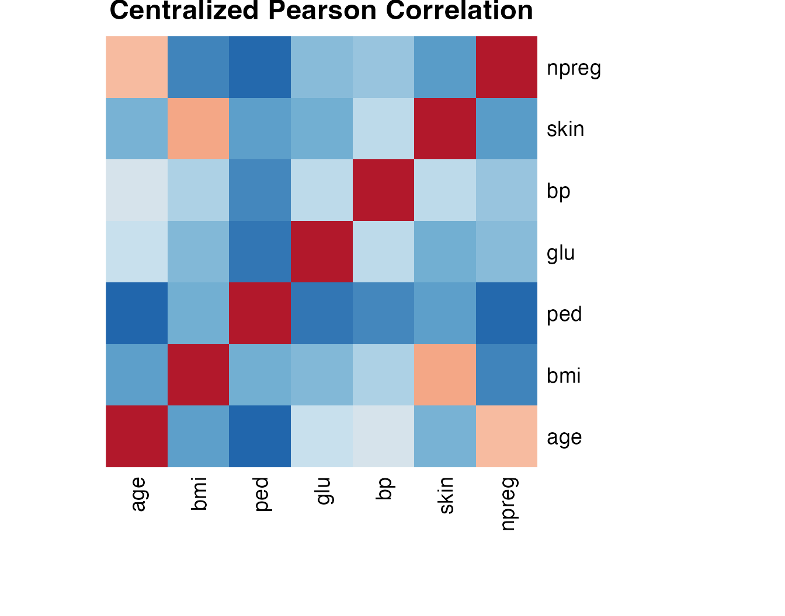
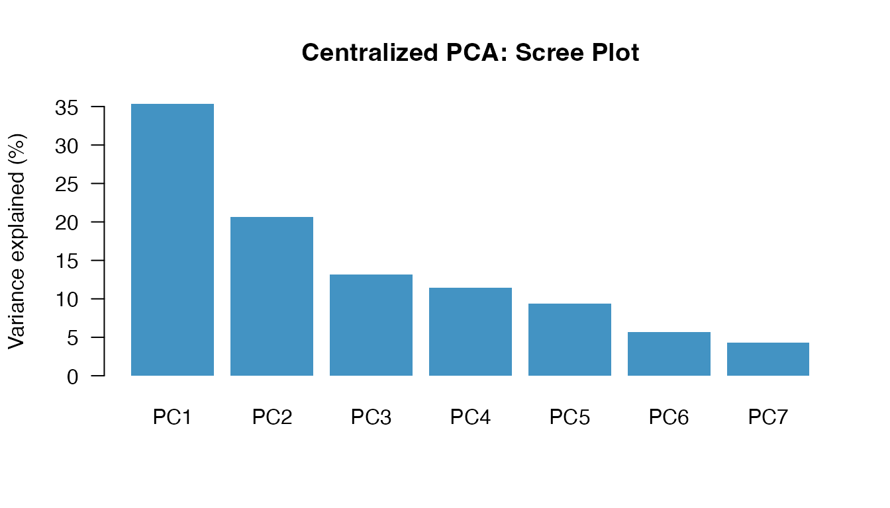
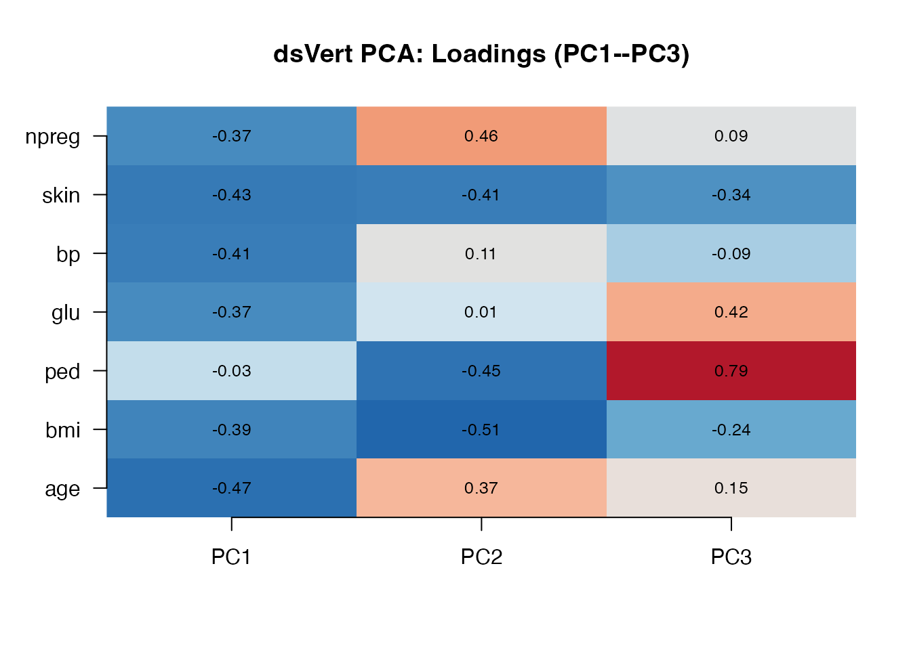
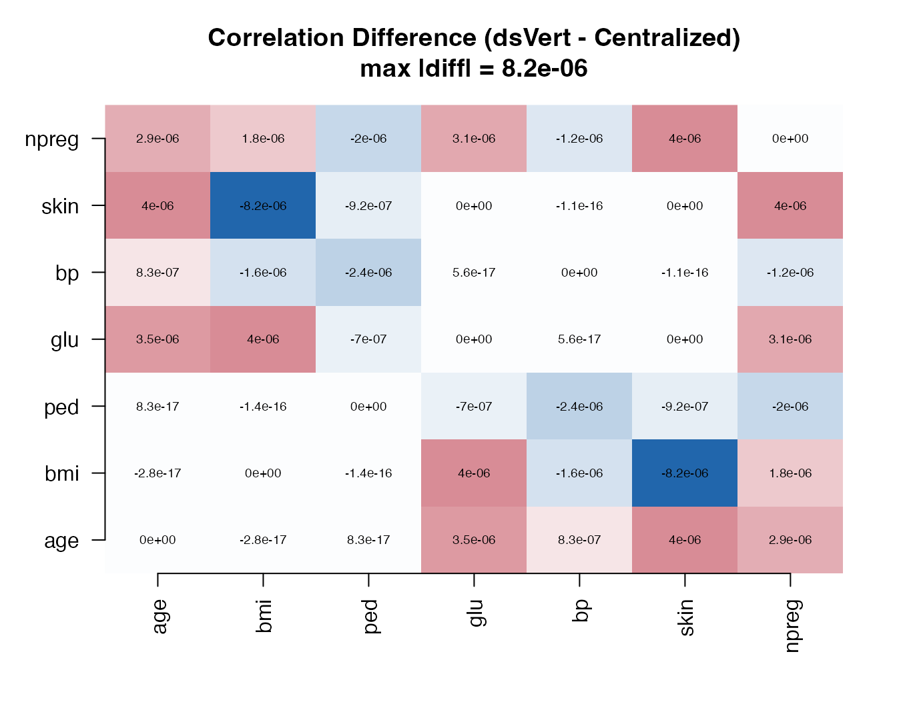
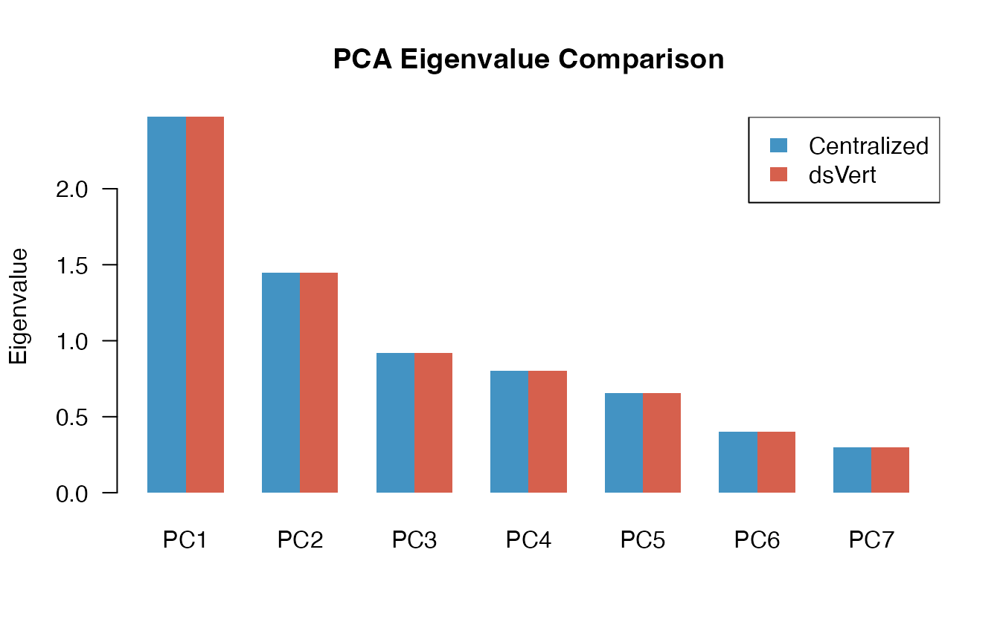
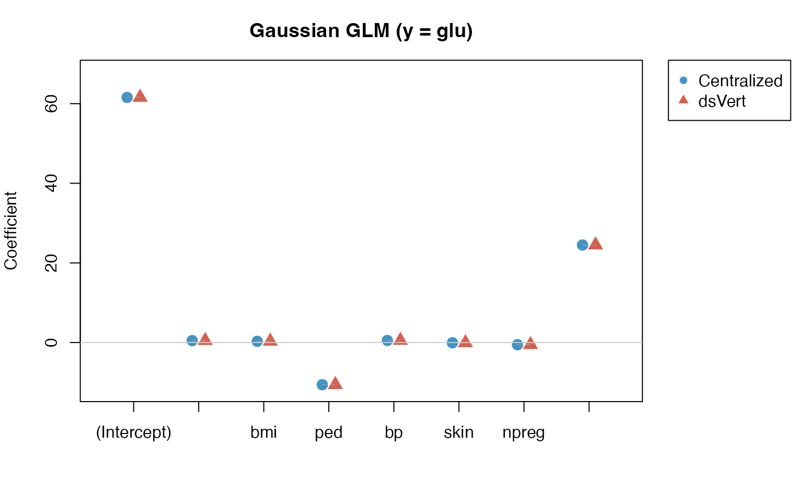
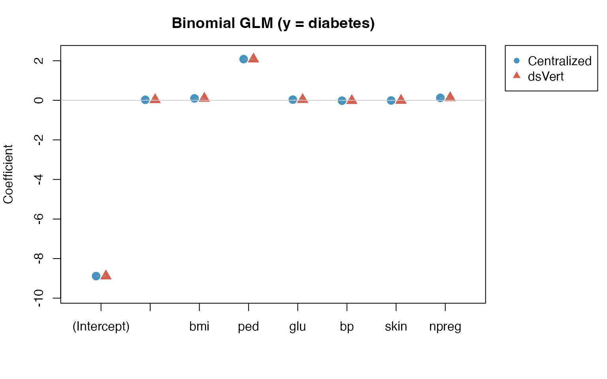
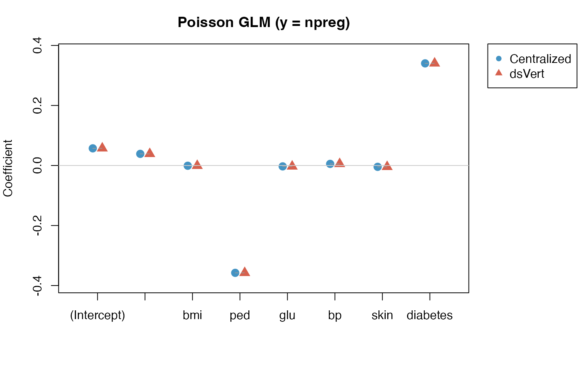

Validation Study: Centralized vs. Federated Vertical Analysis
Source:vignettes/validation.Rmd
validation.RmdIntroduction
This vignette presents a comparative validation of the dsVert federated vertical analysis pipeline against centralized R computations. We exercise the full protocol stack — ECDH-PSI record alignment, MHE-CKKS correlation, spectral PCA, and encrypted-label GLMs — on real data vertically partitioned across three DataSHIELD servers.
The study is organized in three parts:
- Centralized analysis — ground truth computed with standard R functions on the pooled dataset.
- Federated vertical analysis — the same analyses performed via dsVert, where each server holds a different subset of variables and no raw data leaves any server.
- Comparative assessment — side-by-side numerical comparison with error analysis.
Dataset
We use the Pima Indian women diabetes training set
(Pima.tr,
)
from the MASS R package (Venables & Ripley, 2002). It contains
clinical measurements for 200 women of Pima heritage aged
years, collected by the US National Institute of Diabetes and Digestive
and Kidney Diseases near Phoenix, Arizona (Smith et al., 1988). Seven
numeric variables are available: npreg (number of
pregnancies), glu (plasma glucose), bp
(diastolic blood pressure), skin (triceps skin fold
thickness), bmi (body mass index), ped
(diabetes pedigree function), and age (years).
Vertical partitioning scheme
The data are split across three servers, each representing a different clinical domain. Row order is independently shuffled per server so that the ECDH-PSI alignment protocol has real work to do.
| Server | Domain | Variables |
|---|---|---|
| server1 | Anthropometric / familial |
patient_id, age, bmi,
ped
|
| server2 | Glucose and cardiovascular |
patient_id, glu, bp,
skin
|
| server3 | Reproductive / outcome |
patient_id, npreg,
diabetes
|
Data preparation
We load the dataset, create a patient identifier column for PSI matching, and derive a binary diabetes indicator from the original factor variable.
library(MASS)
data("Pima.tr", package = "MASS")
df <- as.data.frame(Pima.tr)
df$patient_id <- sprintf("P%03d", seq_len(nrow(df)))
df$diabetes <- ifelse(df$type == "Yes", 1L, 0L)
num_vars <- c("age", "bmi", "ped", "glu", "bp", "skin", "npreg")A quick look at the data:
#> age bmi ped glu
#> Min. :21.00 Min. :18.20 Min. :0.0850 Min. : 56.0
#> 1st Qu.:23.00 1st Qu.:27.57 1st Qu.:0.2535 1st Qu.:100.0
#> Median :28.00 Median :32.80 Median :0.3725 Median :120.5
#> Mean :32.11 Mean :32.31 Mean :0.4608 Mean :124.0
#> 3rd Qu.:39.25 3rd Qu.:36.50 3rd Qu.:0.6160 3rd Qu.:144.0
#> Max. :63.00 Max. :47.90 Max. :2.2880 Max. :199.0
#> bp skin npreg
#> Min. : 38.00 Min. : 7.00 Min. : 0.00
#> 1st Qu.: 64.00 1st Qu.:20.75 1st Qu.: 1.00
#> Median : 70.00 Median :29.00 Median : 2.00
#> Mean : 71.26 Mean :29.21 Mean : 3.57
#> 3rd Qu.: 78.00 3rd Qu.:36.00 3rd Qu.: 6.00
#> Max. :110.00 Max. :99.00 Max. :14.00Connect to DataSHIELD and align records
We connect to three independent DataSHIELD sessions, each hosting one vertical partition. Because all three partitions reside on the same Opal host, this demonstration validates end-to-end protocol correctness and client-relay orchestration; performance figures are not intended to represent a geographically distributed multi-institution deployment.
Each server only knows its own patient identifiers; the PSI protocol finds the common cohort without revealing which IDs are shared.
library(DSI)
library(DSOpal)
library(dsVertClient)
options(opal.verifyssl = FALSE)
builder <- DSI::newDSLoginBuilder()
builder$append(server = "server1", url = "https://localhost:8443",
user = "administrator", password = "admin123",
driver = "OpalDriver", table = "pima_project.pima_data")
builder$append(server = "server2", url = "https://localhost:8444",
user = "administrator", password = "admin123",
driver = "OpalDriver", table = "pima_project.pima_data")
builder$append(server = "server3", url = "https://localhost:8445",
user = "administrator", password = "admin123",
driver = "OpalDriver", table = "pima_project.pima_data")
conns <- DSI::datashield.login(builder$build(), assign = TRUE, symbol = "D")
psi_result <- ds.psiAlign(
data_name = "D",
id_col = "patient_id",
newobj = "D_aligned",
datasources = conns
)#> $server1
#> $server1$n_matched
#> [1] 200
#>
#> $server1$n_total
#> [1] 200
#>
#>
#> $server2
#> $server2$n_matched
#> [1] 200
#>
#> $server2$n_total
#> [1] 200
#>
#>
#> $server3
#> $server3$n_matched
#> [1] 200
#>
#> $server3$n_total
#> [1] 200All 200 patients were matched across all three servers (100% match rate). The ECDH-PSI protocol correctly identified the common cohort despite independent row shuffling per server.
Centralized analysis (ground truth)
All analyses in this section use the full pooled dataset with standard R functions. These results serve as the reference baseline for comparison with the federated protocol.
Pearson correlation
We compute the correlation matrix across all numeric variables.
local_cor <- cor(df[, num_vars])#> age bmi ped glu bp skin npreg
#> age 1.0000 0.1319 -0.0714 0.3434 0.3911 0.2519 0.5989
#> bmi 0.1319 1.0000 0.1906 0.2168 0.2388 0.6590 0.0583
#> ped -0.0714 0.1906 1.0000 0.0607 -0.0474 0.0954 -0.1195
#> glu 0.3434 0.2168 0.0607 1.0000 0.2694 0.2176 0.1705
#> bp 0.3911 0.2388 -0.0474 0.2694 1.0000 0.2650 0.2521
#> skin 0.2519 0.6590 0.0954 0.2176 0.2650 1.0000 0.1090
#> npreg 0.5989 0.0583 -0.1195 0.1705 0.2521 0.1090 1.0000
The strongest correlations are between age and npreg, as well as between bmi and skin.
PCA (spectral decomposition)
We perform PCA via eigendecomposition of the correlation matrix.
local_pca <- eigen(local_cor)
local_eigenvalues <- local_pca$values
local_loadings <- local_pca$vectors
rownames(local_loadings) <- num_vars
colnames(local_loadings) <- paste0("PC", seq_along(num_vars))
local_ve <- local_eigenvalues / sum(local_eigenvalues) * 100| Component | Eigenvalue | Variance | Cumulative |
|---|---|---|---|
| PC1 | 2.4093 | 34.4% | 34.4% |
| PC2 | 1.4964 | 21.4% | 55.8% |
| PC3 | 0.9119 | 13% | 68.8% |
| PC4 | 0.8000 | 11.4% | 80.3% |
| PC5 | 0.6901 | 9.9% | 90.1% |
| PC6 | 0.3898 | 5.6% | 95.7% |
| PC7 | 0.3025 | 4.3% | 100% |

The first two components explain 55.8% of total variance.

GLM — Gaussian (y = glu)
We fit a Gaussian GLM with glucose concentration as the response variable and all remaining numeric variables (plus diabetes status) as predictors.
local_gauss <- glm(glu ~ age + bmi + ped + bp + skin + npreg + diabetes,
data = df, family = gaussian)#>
#> Call:
#> glm(formula = glu ~ age + bmi + ped + bp + skin + npreg + diabetes,
#> family = gaussian, data = df)
#>
#> Coefficients:
#> Estimate Std. Error t value Pr(>|t|)
#> (Intercept) 68.96159 15.62700 4.413 1.70e-05 ***
#> age 0.55832 0.24166 2.310 0.0219 *
#> bmi 0.23301 0.43405 0.537 0.5920
#> ped -2.36903 6.64389 -0.357 0.7218
#> bp 0.31786 0.18792 1.691 0.0924 .
#> skin 0.07046 0.22559 0.312 0.7551
#> npreg -0.84245 0.72494 -1.162 0.2466
#> diabetes 26.29928 4.64856 5.658 5.51e-08 ***
#> ---
#> Signif. codes: 0 '***' 0.001 '**' 0.01 '*' 0.05 '.' 0.1 ' ' 1
#>
#> (Dispersion parameter for gaussian family taken to be 742.8742)
#>
#> Null deviance: 199560 on 199 degrees of freedom
#> Residual deviance: 142632 on 192 degrees of freedom
#> AIC: 1899.5
#>
#> Number of Fisher Scoring iterations: 2GLM — Binomial (y = diabetes)
We fit a logistic regression to predict diabetes status from all seven clinical variables.
local_binom <- glm(diabetes ~ age + bmi + ped + glu + bp + skin + npreg,
data = df, family = binomial)#>
#> Call:
#> glm(formula = diabetes ~ age + bmi + ped + glu + bp + skin +
#> npreg, family = binomial, data = df)
#>
#> Coefficients:
#> Estimate Std. Error z value Pr(>|z|)
#> (Intercept) -9.773062 1.770386 -5.520 3.38e-08 ***
#> age 0.041184 0.022091 1.864 0.06228 .
#> bmi 0.083624 0.042827 1.953 0.05087 .
#> ped 1.820410 0.665514 2.735 0.00623 **
#> glu 0.032117 0.006787 4.732 2.22e-06 ***
#> bp -0.004768 0.018541 -0.257 0.79707
#> skin -0.001917 0.022500 -0.085 0.93211
#> npreg 0.103183 0.064694 1.595 0.11073
#> ---
#> Signif. codes: 0 '***' 0.001 '**' 0.01 '*' 0.05 '.' 0.1 ' ' 1
#>
#> (Dispersion parameter for binomial family taken to be 1)
#>
#> Null deviance: 256.41 on 199 degrees of freedom
#> Residual deviance: 178.39 on 192 degrees of freedom
#> AIC: 194.39
#>
#> Number of Fisher Scoring iterations: 5GLM — Poisson (y = npreg)
We model the number of pregnancies as a count variable using a Poisson GLM with a log link.
local_pois <- glm(npreg ~ age + bmi + ped + glu + bp + skin + diabetes,
data = df, family = poisson)#>
#> Call:
#> glm(formula = npreg ~ age + bmi + ped + glu + bp + skin + diabetes,
#> family = poisson, data = df)
#>
#> Coefficients:
#> Estimate Std. Error z value Pr(>|z|)
#> (Intercept) -0.026629 0.332370 -0.080 0.93614
#> age 0.039114 0.003444 11.358 < 2e-16 ***
#> bmi 0.002999 0.008596 0.349 0.72719
#> ped -0.378371 0.148213 -2.553 0.01068 *
#> glu -0.002727 0.001372 -1.988 0.04677 *
#> bp 0.004165 0.003720 1.120 0.26284
#> skin -0.002472 0.003820 -0.647 0.51759
#> diabetes 0.286849 0.091332 3.141 0.00169 **
#> ---
#> Signif. codes: 0 '***' 0.001 '**' 0.01 '*' 0.05 '.' 0.1 ' ' 1
#>
#> (Dispersion parameter for poisson family taken to be 1)
#>
#> Null deviance: 627.1 on 199 degrees of freedom
#> Residual deviance: 416.1 on 192 degrees of freedom
#> AIC: 950.12
#>
#> Number of Fisher Scoring iterations: 5Federated vertical analysis (dsVert)
We now repeat every analysis using the dsVert federated protocol. Each server only has access to its own subset of variables. Cross-server quantities (such as correlation matrix off-diagonal blocks, and gradients involving variables from multiple servers) are computed under multiparty homomorphic encryption (MHE-CKKS) with threshold decryption, so individual-level data never leaves any server.
Correlation (MHE-CKKS)
The ds.vertCor function computes the full
Pearson correlation matrix. Within-server blocks are computed locally;
cross-server blocks use CKKS encrypted dot products with threshold
decryption and server-side fusion.
variables <- list(
server1 = c("age", "bmi", "ped"),
server2 = c("glu", "bp", "skin"),
server3 = c("npreg")
)
cor_result <- ds.vertCor(
data_name = "D_aligned",
variables = variables,
log_n = 12,
log_scale = 40,
datasources = conns
)
dsvert_cor <- cor_result$correlation#> age bmi ped glu bp skin npreg
#> age 1.0000 0.1319 -0.0714 0.3434 0.3911 0.2519 0.5989
#> bmi 0.1319 1.0000 0.1906 0.2168 0.2388 0.6590 0.0583
#> ped -0.0714 0.1906 1.0000 0.0607 -0.0474 0.0954 -0.1195
#> glu 0.3434 0.2168 0.0607 1.0000 0.2694 0.2176 0.1705
#> bp 0.3911 0.2388 -0.0474 0.2694 1.0000 0.2650 0.2521
#> skin 0.2519 0.6590 0.0954 0.2176 0.2650 1.0000 0.1091
#> npreg 0.5989 0.0583 -0.1195 0.1705 0.2521 0.1091 1.0000PCA
PCA is computed by eigendecomposition of the federated correlation matrix.
dsvert_pca <- eigen(dsvert_cor)
dsvert_eigenvalues <- dsvert_pca$values
dsvert_loadings <- dsvert_pca$vectors
rownames(dsvert_loadings) <- num_vars
colnames(dsvert_loadings) <- paste0("PC", seq_along(num_vars))
dsvert_ve <- dsvert_eigenvalues / sum(dsvert_eigenvalues) * 100| Component | Eigenvalue | Variance | Cumulative |
|---|---|---|---|
| PC1 | 2.4093 | 34.4% | 34.4% |
| PC2 | 1.4964 | 21.4% | 55.8% |
| PC3 | 0.9119 | 13% | 68.8% |
| PC4 | 0.8000 | 11.4% | 80.3% |
| PC5 | 0.6901 | 9.9% | 90.1% |
| PC6 | 0.3898 | 5.6% | 95.7% |
| PC7 | 0.3025 | 4.3% | 100% |


GLM — Gaussian (y = glu)
The dsVert GLM uses encrypted-label block coordinate descent
(BCD-IRLS). The label variable (glu) resides on server2;
the remaining predictors are distributed across all three servers.
Gradients are computed under MHE-CKKS and decrypted via share-wrapped
threshold decryption with server-side fusion.
glm_gauss <- ds.vertGLM(
data_name = "D_aligned", y_var = "glu",
x_vars = list(server1 = c("age", "bmi", "ped"),
server2 = c("bp", "skin"),
server3 = c("npreg", "diabetes")),
y_server = "server2", family = "gaussian",
max_iter = 100, tol = 1e-4, lambda = 1e-4,
log_n = 12, log_scale = 40,
datasources = conns
)#> Length Class Mode
#> coefficients 8 -none- numeric
#> iterations 1 -none- numeric
#> converged 1 -none- logical
#> family 1 -none- character
#> n_obs 1 -none- numeric
#> n_vars 1 -none- numeric
#> lambda 1 -none- numeric
#> deviance 1 -none- numeric
#> null_deviance 1 -none- numeric
#> pseudo_r2 1 -none- numeric
#> aic 1 -none- numeric
#> y_server 1 -none- character
#> call 12 -none- callGLM — Binomial (y = diabetes)
Logistic regression with the binary outcome on server3. The IRLS working weights are computed on the label server and routed to non-label servers via transport encryption.
glm_binom <- ds.vertGLM(
data_name = "D_aligned", y_var = "diabetes",
x_vars = list(server1 = c("age", "bmi", "ped"),
server2 = c("glu", "bp", "skin"),
server3 = c("npreg")),
y_server = "server3", family = "binomial",
max_iter = 100, tol = 1e-4, lambda = 1e-4,
log_n = 12, log_scale = 40,
datasources = conns
)#> Length Class Mode
#> coefficients 8 -none- numeric
#> iterations 1 -none- numeric
#> converged 1 -none- logical
#> family 1 -none- character
#> n_obs 1 -none- numeric
#> n_vars 1 -none- numeric
#> lambda 1 -none- numeric
#> deviance 1 -none- numeric
#> null_deviance 1 -none- numeric
#> pseudo_r2 1 -none- numeric
#> aic 1 -none- numeric
#> y_server 1 -none- character
#> call 12 -none- callGLM — Poisson (y = npreg)
Count regression for the number of pregnancies. The Poisson log-link compresses the coefficient scale, which tends to aid convergence of the encrypted BCD procedure.
glm_pois <- ds.vertGLM(
data_name = "D_aligned", y_var = "npreg",
x_vars = list(server1 = c("age", "bmi", "ped"),
server2 = c("glu", "bp", "skin"),
server3 = c("diabetes")),
y_server = "server3", family = "poisson",
max_iter = 100, tol = 1e-4, lambda = 1e-4,
log_n = 12, log_scale = 40,
datasources = conns
)#> Length Class Mode
#> coefficients 8 -none- numeric
#> iterations 1 -none- numeric
#> converged 1 -none- logical
#> family 1 -none- character
#> n_obs 1 -none- numeric
#> n_vars 1 -none- numeric
#> lambda 1 -none- numeric
#> deviance 1 -none- numeric
#> null_deviance 1 -none- numeric
#> pseudo_r2 1 -none- numeric
#> aic 1 -none- numeric
#> y_server 1 -none- character
#> call 12 -none- callComparative assessment
We now compare the centralized and federated results quantitatively.
Correlation: element-wise differences
We compute the element-wise difference matrix between the dsVert and centralized correlation matrices.
cor_diff <- dsvert_cor - local_cor#> age bmi ped glu bp skin npreg
#> age 0.0e+00 0.0e+00 0.0e+00 -3.1e-06 -5.3e-06 2.9e-06 4.5e-06
#> bmi 0.0e+00 0.0e+00 0.0e+00 5.5e-06 -7.4e-06 2.0e-07 4.5e-06
#> ped 0.0e+00 0.0e+00 0.0e+00 5.0e-07 -2.7e-06 -2.3e-06 -2.1e-06
#> glu -3.1e-06 5.5e-06 5.0e-07 0.0e+00 0.0e+00 0.0e+00 -1.4e-06
#> bp -5.3e-06 -7.4e-06 -2.7e-06 0.0e+00 0.0e+00 0.0e+00 4.0e-06
#> skin 2.9e-06 2.0e-07 -2.3e-06 0.0e+00 0.0e+00 0.0e+00 2.3e-06
#> npreg 4.5e-06 4.5e-06 -2.1e-06 -1.4e-06 4.0e-06 2.3e-06 0.0e+00
All element-wise differences are of order , well below any substantively meaningful threshold.
PCA: eigenvalue comparison
eig_diff <- dsvert_eigenvalues - local_eigenvalues| Component | Local | dsVert | Difference |
|---|---|---|---|
| PC1 | 2.409261 | 2.409263 | 1.57e-06 |
| PC2 | 1.496447 | 1.496446 | -1.39e-06 |
| PC3 | 0.911868 | 0.911867 | -6.30e-07 |
| PC4 | 0.799971 | 0.799973 | 2.18e-06 |
| PC5 | 0.690135 | 0.690136 | 5.35e-07 |
| PC6 | 0.389819 | 0.389820 | 9.14e-07 |
| PC7 | 0.302499 | 0.302496 | -3.18e-06 |

The eigenvalues are virtually identical; differences are of order , propagated directly from the correlation matrix precision.
GLM: Gaussian coefficient comparison (y = glu)
gauss_local <- coef(local_gauss)
gauss_dsvert <- coef(glm_gauss)
gauss_diff <- gauss_dsvert - gauss_local| Term | Local | dsVert | Difference |
|---|---|---|---|
| (Intercept) | 68.9616 | 68.9678 | 6.23e-03 |
| age | 0.5583 | 0.5580 | -2.98e-04 |
| bmi | 0.2330 | 0.2328 | -2.23e-04 |
| ped | -2.3690 | -2.3694 | -3.41e-04 |
| bp | 0.3179 | 0.3179 | 5.41e-05 |
| skin | 0.0705 | 0.0706 | 1.37e-04 |
| npreg | -0.8424 | -0.8418 | 6.50e-04 |
| diabetes | 26.2993 | 26.3008 | 1.52e-03 |

Maximum absolute coefficient difference: 6.23e-03.
GLM: Binomial coefficient comparison (y =
diabetes)
binom_local <- coef(local_binom)
binom_dsvert <- coef(glm_binom)
binom_diff <- binom_dsvert - binom_local| Term | Local | dsVert | Difference |
|---|---|---|---|
| (Intercept) | -9.7731 | -9.7727 | 3.91e-04 |
| age | 0.0412 | 0.0412 | -5.24e-06 |
| bmi | 0.0836 | 0.0836 | -1.02e-05 |
| ped | 1.8204 | 1.8203 | -6.39e-05 |
| glu | 0.0321 | 0.0321 | -5.49e-07 |
| bp | -0.0048 | -0.0048 | 1.13e-06 |
| skin | -0.0019 | -0.0019 | 4.52e-06 |
| npreg | 0.1032 | 0.1032 | 5.39e-06 |

Maximum absolute coefficient difference: 3.91e-04.
GLM: Poisson coefficient comparison (y = npreg)
| Term | Local | dsVert | Difference |
|---|---|---|---|
| (Intercept) | -0.0266 | -0.0264 | 1.84e-04 |
| age | 0.0391 | 0.0391 | -6.38e-06 |
| bmi | 0.0030 | 0.0030 | -1.90e-05 |
| ped | -0.3784 | -0.3784 | -1.64e-05 |
| glu | -0.0027 | -0.0027 | 7.02e-07 |
| bp | 0.0042 | 0.0042 | 4.97e-06 |
| skin | -0.0025 | -0.0025 | 7.23e-06 |
| diabetes | 0.2868 | 0.2869 | 4.15e-05 |

Maximum absolute coefficient difference: 1.84e-04.
Summary
| Protocol | Metric | Value |
|---|---|---|
| PSI Alignment | Matched cohort | 200 / 200 (100%) |
| Correlation | Max |r| error | 7.38e-06 |
| PCA | Max eigenvalue error | 3.18e-06 |
| GLM Gaussian | Max |coef| error | 6.23e-03 |
| GLM Binomial | Max |coef| error | 3.91e-04 |
| GLM Poisson | Max |coef| error | 1.84e-04 |
Error analysis
The three error regimes observed correspond to different sources of approximation in the dsVert pipeline:
Correlation and PCA
().
These errors arise from CKKS approximate arithmetic used in the MHE
threshold protocol. The encoding precision is governed by
log_scale = 40, providing approximately
precision units. After
encoding, homomorphic multiplication, inner-sum rotations, and threshold
decryption, the effective precision degrades to
,
consistent with CKKS error propagation theory.
GLM coefficients
(
to
).
GLM errors are slightly larger because they accumulate over multiple
BCD-IRLS iterations, each involving an encrypted gradient computation.
Additionally, the ridge regularization parameter
()
introduces a small systematic bias relative to the unpenalized
centralized glm(). The binomial and Poisson families show
smaller errors than Gaussian because their link functions (logit, log)
compress the coefficient scale.
In all cases, the errors are far below any practically meaningful threshold for statistical inference.